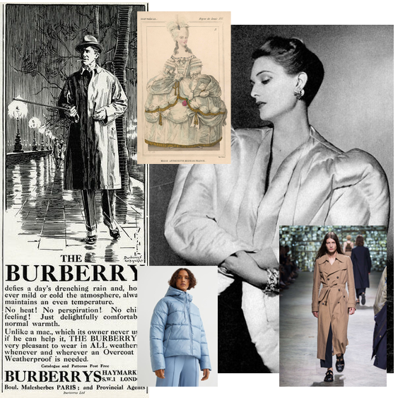

PESQUISA E DESENVOLVIMENTO

Trench Coat, Puffer Jakcet & Marie Antoinette
Durante a etapa de pesquisa, foram analisadas as peças Trench Coat e Puffer Jacket, além de tendências do século XVII e a monarca Marie Antoinette. A partir disso, foi possível realizar uma análise de formas, silhuetas e cores e partindo daí, iniciar o desenvolvimento. As cintuas acentuadas com saias volumosas foram o que mais chamaram a atenção, as quais poderiam ser combinadas com a silhueta marcante da Puffer Jacket. Não obstante, a tendência militar do Trench Coat entrava em contraste com a estética delicada das tendências de Marie Antoinette. Por fim, foi observado também a possibiçidade de incorporar elementos ornamentais como babados e bordados ao Trench Coat e Puffer Jacket, as quais não possuem ornamento algum. Vale notar que essas peças icônicas em teoria eram peças funcionais, mas acabaram sendo incorporadas à moda. Dessa maneira a coleção foi desenvolvida unindo formas e cores, à função e estilo.
A COLEÇÃO